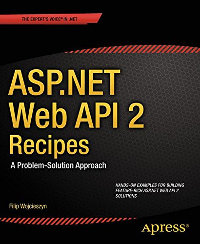
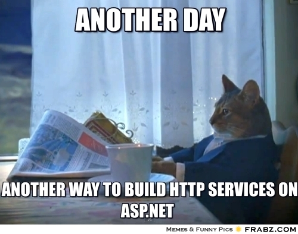
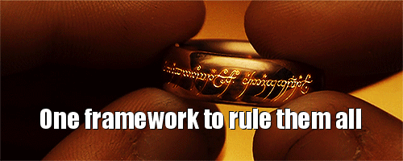
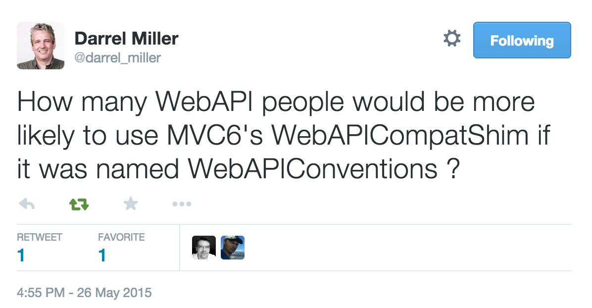

Migrating from ASP.NET Web API to MVC 6
Filip W


ASP.NET Web API 2 Recipes

HTTP services in ASP.NET
- HTTP Handlers
- ASMX
- WCF Web Http | WCF REST Starter Kit
- ASP.NET MVC
- WCF Web API | ASP.NET Web API

ASP.NET MVC 6

Migration to MVC 6
- runs on top of DNX
- new set of HTTP abstractions
- generally defaults to MVC conventions, making Web API migration/development slightly confusing
- very flexible and customizable framework
- Web API Compatibility Shim
Web API Compatibility Shim
